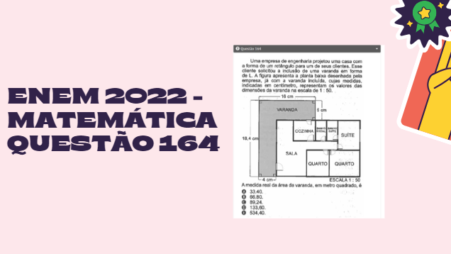

Matemática

Esse trabalho foi o mais legal de fazer, foi feito no 3°ano e foi feito em grupo, tivemos que pedir para as pessoas responder nosso formulario que era sobre bebida alcoolica.
Após todos responderem o formulario tivemos que fazer uma apresentação com as estatisticas do formulario.

Esse trabalho foi bem legal pois tive a experiencia de responder questões do enem e fazer uma apresentação da minha resolução.
Eu escolhi esse trabalho pois tive um papel crucial na realização, foi feito em grupo e todos não sabiam qual objeto iriamos fazer, então tive a ideia de fazer de sacos zip-lock.
A partir daí conseguimos fazer o trablho de forma perfeita.